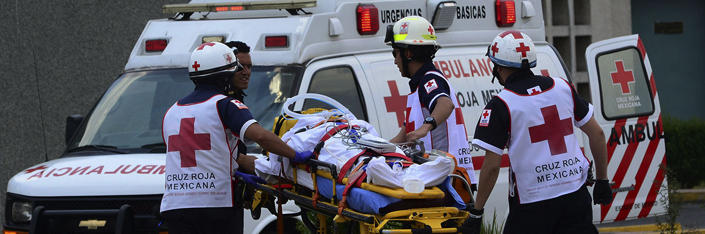
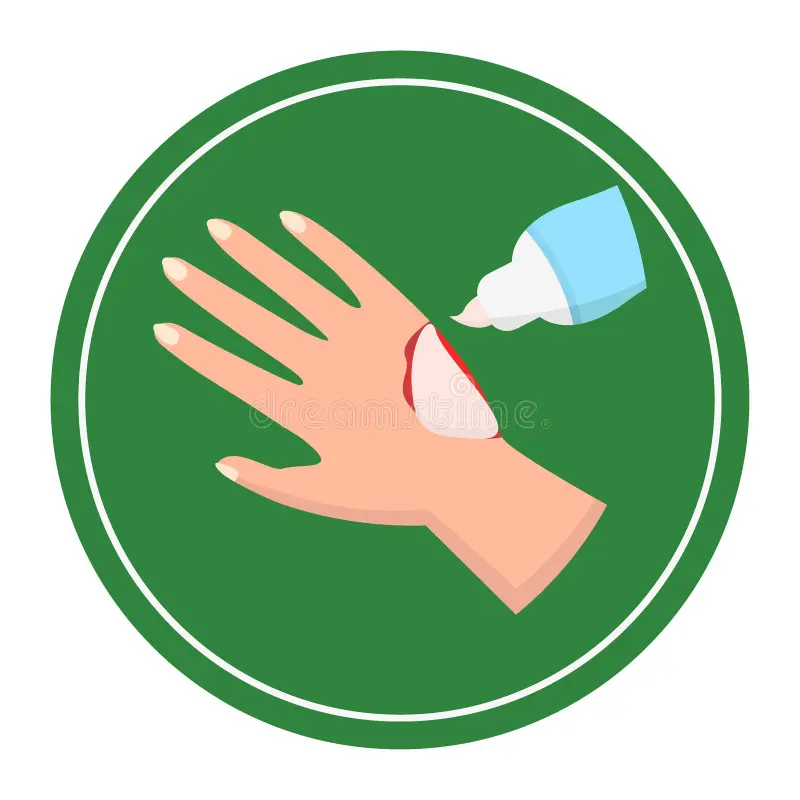
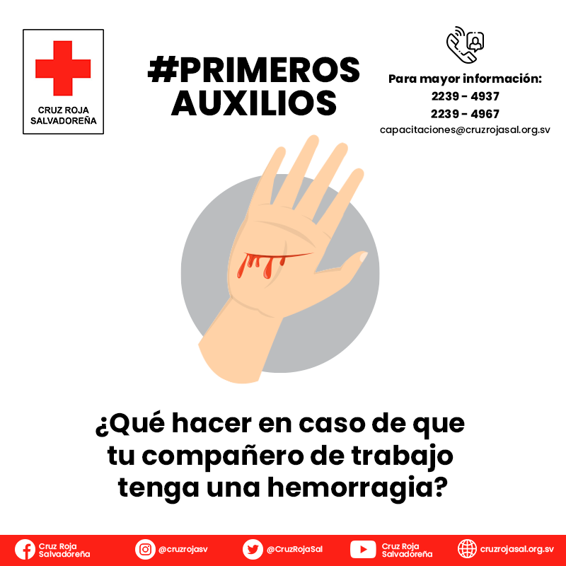
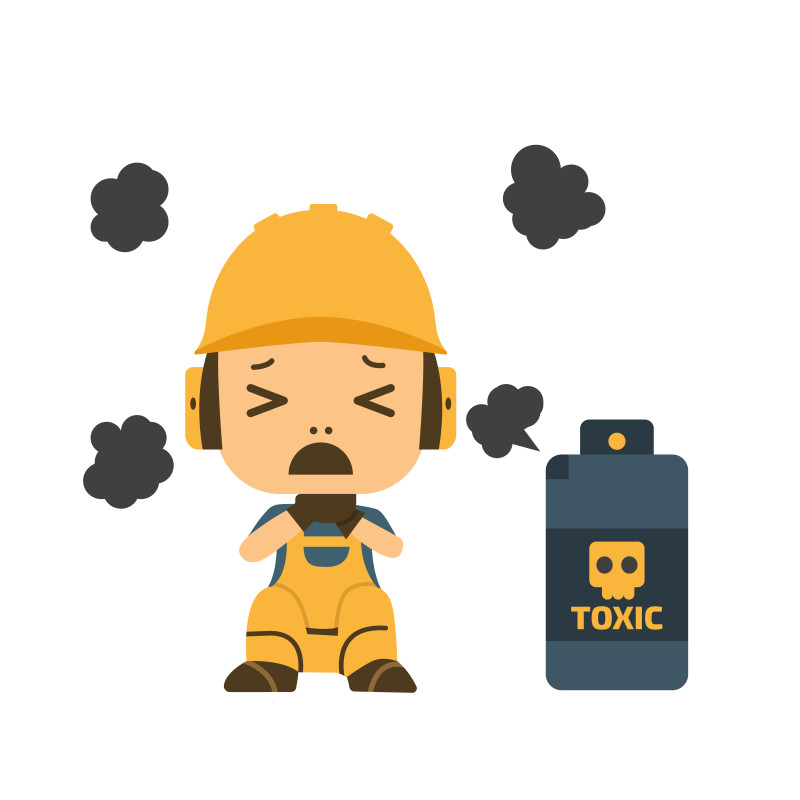
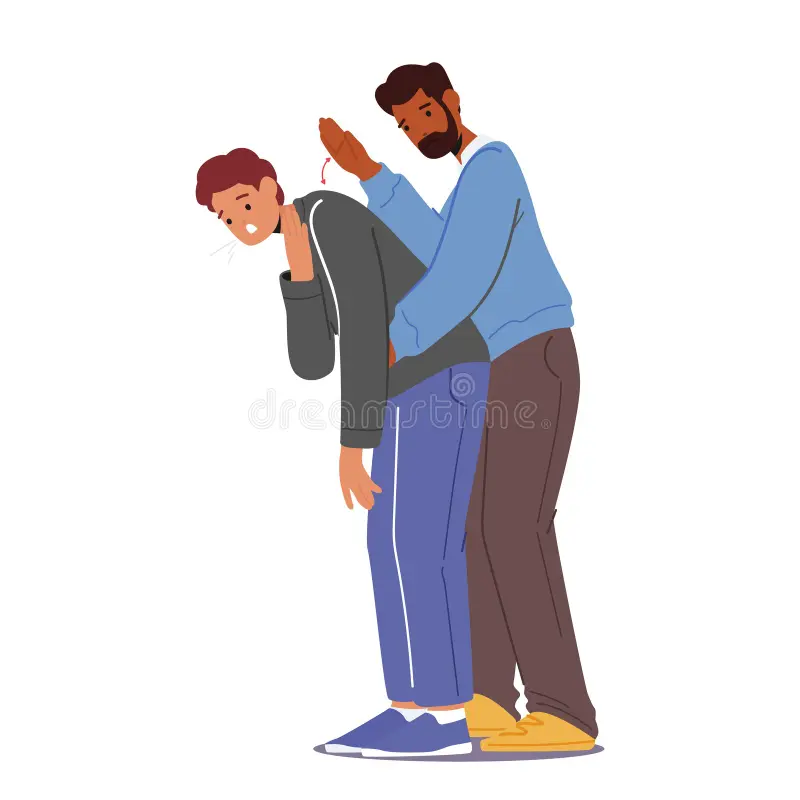

Primeros auxilios para Quemaduras
Que hacer en caso de sufrir una quemadura, pon atención a las distintas señales y no olvides consultar a un especialista médico para una correcta evaluación.
Más información

Primeros Auxilios para Hemorragias
Ubica el lugar de daño y determina el riesgo de la herida, algunas no necesitan de atención médica profesional. Aprende a identificarlas
Más información

Intoxicaciones
La mejor manera de evitar este tipo de accidentes es la prevención, manten objetos peligrosos fuera del alcance de menores y revisa instalaciones del hogar.
Más información

Maniobra de Heimlich
Los accidente por asfixia son más comúnes de lo que parecen, no golpees la espalda de alguien, presiona su debajo de sus costillas con tu puño.
Más información